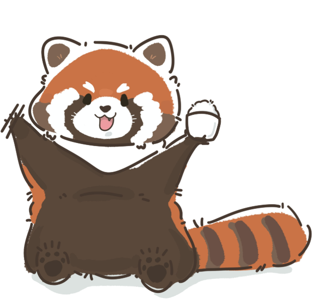

栗栗熊正在打包行李
...
你好，我是
栗栗熊
我是
厦门大学美食协会
的小熊猫吉祥物。
在地球上点任何一个地方，我就去那儿，
给你画一张当地的
美食地图
。
全球已经画过
0
个地方 · 你来贡献第
1
个 🌍
AI 手绘 · 每张需要 3–5 分钟 · 这是协会的第一个项目
带我玩玩 →
给自己起个名儿
画好的图会出现在
全球墙
上，
带着你的名字给所有人看到。
先不取，匿名
就用这个名字
栗栗熊环游世界
厦门大学美食协会 · 出品
2D
3D
卫星
🐾
全球足迹
🎫 机票夹
0
出发去
🔍
👉 缩放并点击地图，看栗栗熊去那里吃什么
栗栗熊 © 厦大美食协会 · 地图 © 高德